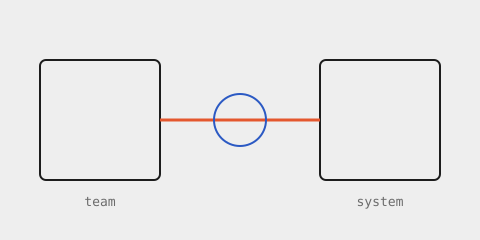

Field note
Build it in.
Most teams reach for intelligent systems the way they reach for a new hire: bolt it on the side, hope it learns the room. The ones that hold up build it into how the work already moves.

Infrastructure earns trust the same way a good colleague does: by being there at the right moment, with context, and by staying quiet otherwise. That is a design problem before it is an engineering one.
Earn the room. Nothing gets access, context, or authority by default.
90days to recurring
3capability clusters
41skills deployed
$ heyhi extract --breakpoint lg --emit ir # one intermediate representation per breakpoint, schema-checked
This line is set in a display face that the workspace will not have.
A near-crimson note, set one tick off the accent token.
Start a conversation